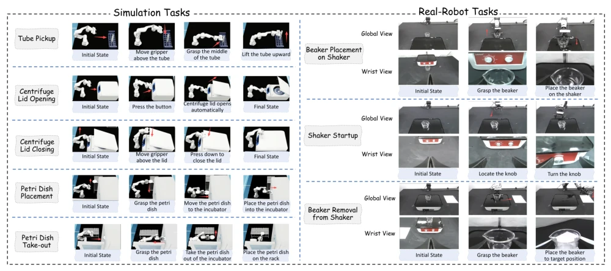
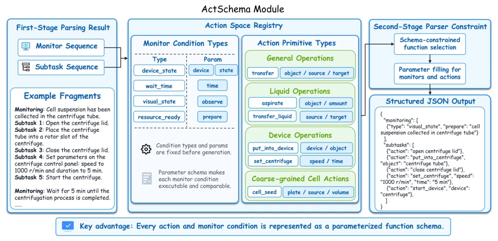
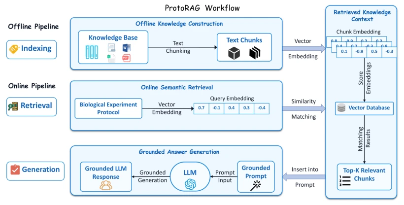
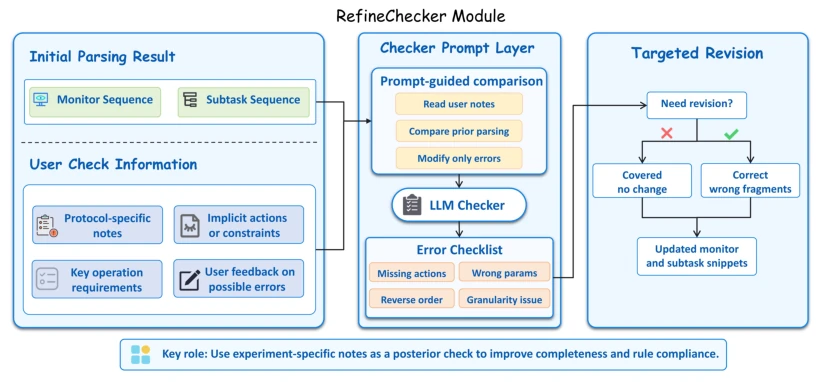
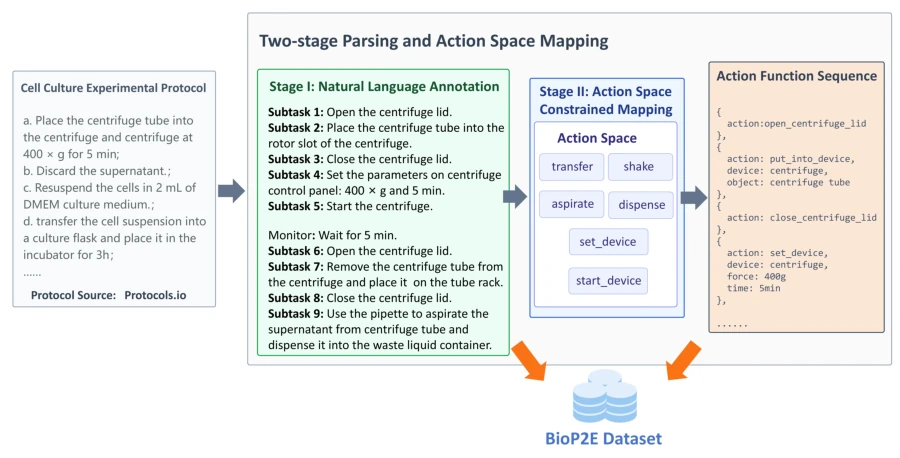
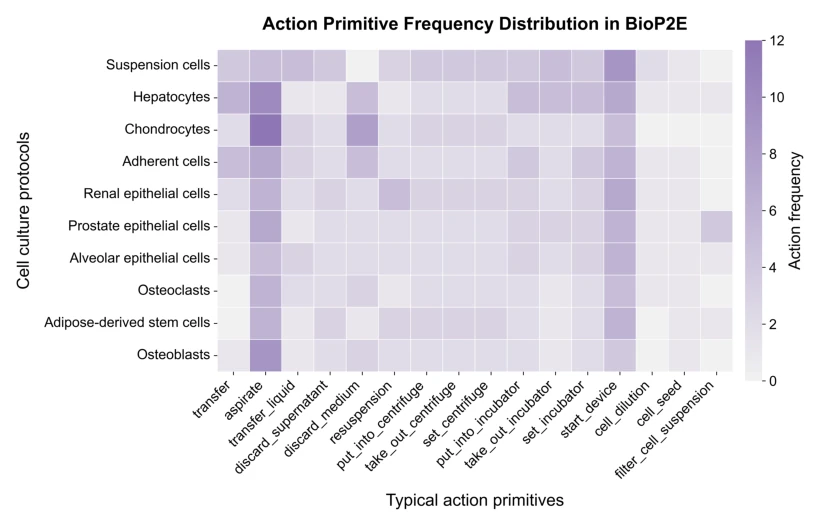
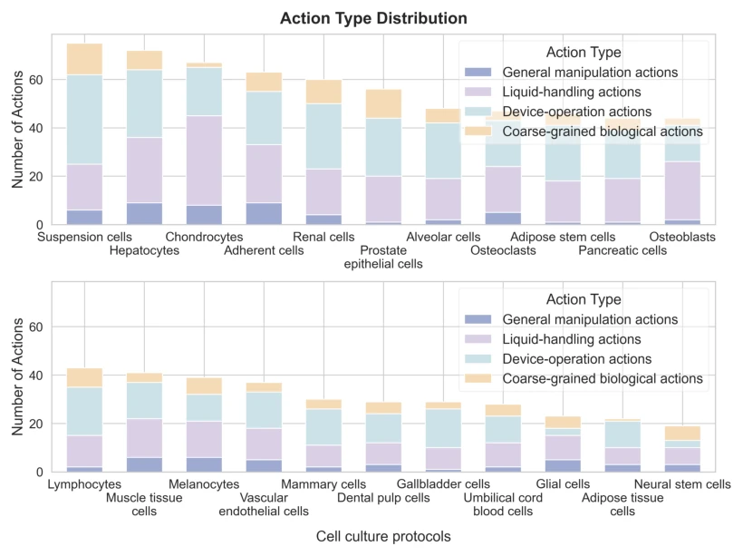
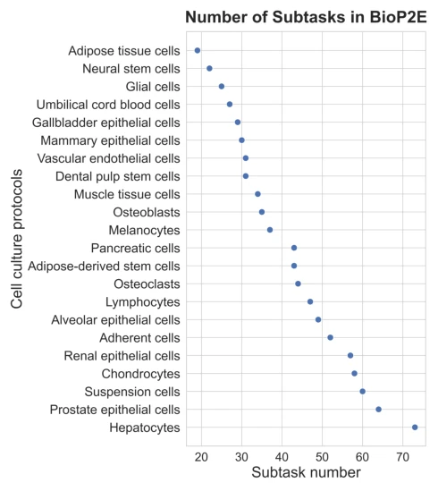

This paper attempts to solve the "Tower of Babel" problem of translating biological experiment protocols into robot actions. The ProtoAct framework transforms fuzzy text into structured JSON via RAG and Schema constraints, which is quite practical. However, to be honest, this task is quite "heavy," relying on a large amount of manually annotated BioP2E dataset, and RefineChecker still depends on user-provided notes for error correction, effectively outsourcing the "intelligence" component to human experts. Although it has been validated in both simulation and on real hardware, it is still distant from a fully automatic closed-loop, resembling more of an advanced "protocol translator" than a fully autonomous "experimenter." Nevertheless, for VLA training data generation, this is indeed a solid middleware, at least ensuring robots no longer stare blankly at incomprehensible texts.
研究动机Motivation
生物湿实验协议通常是为训练有素的研究者写的，隐含了大量常规操作、状态依赖条件和上下文参数，直接给机器人执行简直是天书。现有研究如 BioPlanner (O'Donoghue et al. 2023) 和 ProtoMed-LLM (Yi, Lim, and Yoon 2025) 虽然能将协议转为伪代码，但缺乏对物理动作、触发时机及状态依赖的明确指定。Vision-Language-Action (VLA) 模型需要明确的监控条件和动作原语，而现有方法生成的自由文本计划无法直接支持自动评估或策略学习。因此，亟需一个能连接协议理解与具身执行的中间表示，既要让人可读，又要让机器可执行。
Biological wet-lab experiment protocols are typically written for trained researchers, implicitly containing numerous routine operations, state-dependent conditions, and context parameters; directly providing them to robots for execution is akin to reading an incomprehensible text. Existing research such as BioPlanner (O'Donoghue et al. 2023) and ProtoMed-LLM (Yi, Lim, and Yoon 2025) can convert protocols into pseudocode, yet they lack explicit specifications for physical actions, trigger timing, and state dependencies. Vision-Language-Action (VLA) models require explicit monitoring conditions and action primitives, whereas free-text plans generated by existing methods cannot directly support automatic evaluation or policy learning. Therefore, there is an urgent need for an intermediate representation that connects protocol understanding with embodied execution, being both human-readable and machine-executable.
The overall ProtoAct process is divided into three stages: parsing, validation, and mapping. First, ProtoRAG utilizes Retrieval-Augmented Generation (RAG) to retrieve similar manually annotated protocol fragments from a pre-built knowledge base, assisting the LLM in context-sensitive parsing to generate monitoring conditions and subtask sequences. Second, RefineChecker serves as a post-validation mechanism, comparing initial parsing results with user-provided experiment-specific notes to correct omitted actions, parameters, or sequence errors. Finally, the ActSchema module maps natural language descriptions into constrained JSON function sequences, defining monitoring primitives, action primitives, and their parameter patterns. The entire system builds an interactive interface via Streamlit and manages the workflow through LangChain. The core innovation lies in introducing an intermediate representation layer that retains semantic logic while ensuring structured output through Schema constraints, facilitating downstream VLA model training and automated evaluation. This design ensures parsing results are both easy for human review and directly convertible into robot-executable action function sequences, solving the problem of disconnection between semantics and execution in traditional methods.
The authors constructed the BioP2E dataset, containing 22 cell culture protocols, with 258 monitoring conditions and 910 subtasks manually annotated. Evaluation across 7 large language models showed that GPT-5.3 and Qwen3-max performed well. Ablation experiments confirmed that ProtoRAG, RefineChecker, and ActSchema all made complementary contributions to performance; removing ActSchema resulted in a significant drop in the action primitive F1 score. In the embodied execution validation, SmolVLA and π0 models were trained using subtasks generated by ProtoAct on the Pipette simulation platform and a real robotic arm. Results indicated that the generated subtasks effectively supported demonstration data collection and policy execution; the simulation success rate reached up to 98%, and the physical robot completed continuous workflows, demonstrating the framework's practicality in connecting protocol understanding with embodied execution. Notably, although the BioP2E scale is limited, its fine-grained annotations provide a unified benchmark for evaluating LLM action mapping capabilities, and the consistency between simulation and physical hardware verifies the method's transferability.

Figure 4: Example embodied execution tasks in simulation and real-robot settings.
其他图片Other Figures

Figure 2: Architecture of the ActSchema module.

Figure 5: Workflow of the ProtoRAG module.

Figure 6: Architecture of the RefineChecker module.

Figure 7: Annotation procedure of the BioP2E dataset.

Figure 8: Action primitive frequency heatmap for selected BioP2E cell culture protocols.

Figure 9: Action type distribution across BioP2E cell culture protocols.

Figure 10: Distribution of manually annotated subtask counts across BioP2E cell culture protocols. Each point denotes one protocol; the x-axis indicates the number of natural-language subtasks, and the y-axis sorts protocols in ascending order by subtask count.